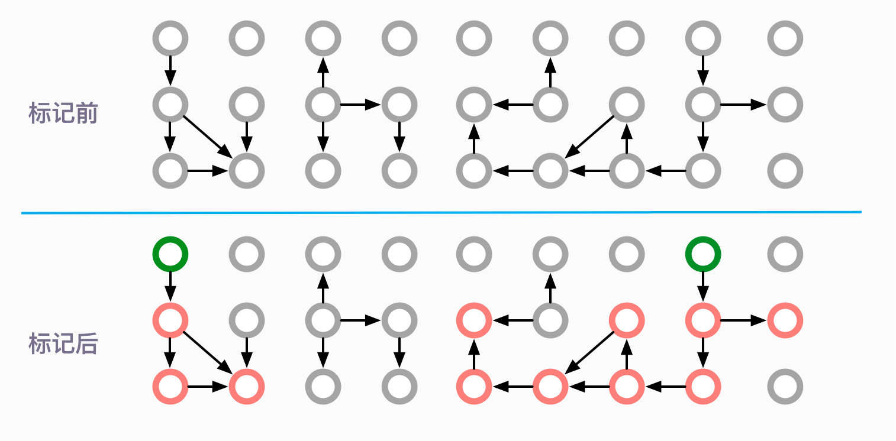
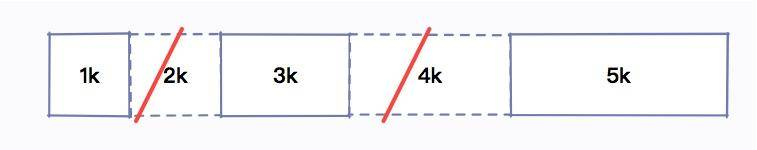
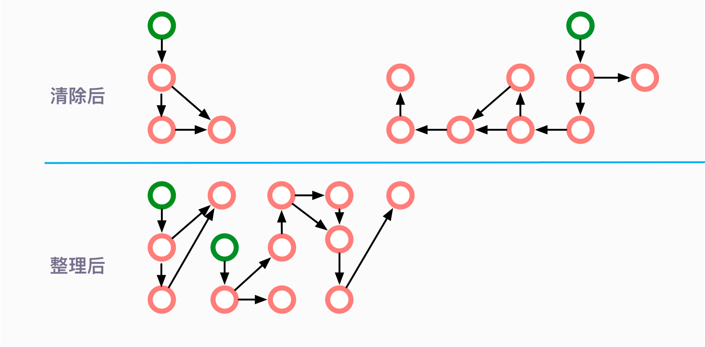
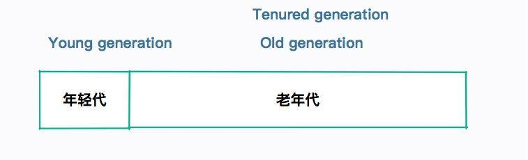

- 00 开篇词：JVM，一块难啃的骨头.md.html
- 01 一探究竟：为什么需要 JVM？它处在什么位置？.md.html
- 02 大厂面试题：你不得不掌握的 JVM 内存管理.md.html
- 03 大厂面试题：从覆盖 JDK 的类开始掌握类的加载机制.md.html
- 04 动手实践：从栈帧看字节码是如何在 JVM 中进行流转的.md.html
- 05 大厂面试题：得心应手应对 OOM 的疑难杂症.md.html
- 06 深入剖析：垃圾回收你真的了解吗？（上）.md.html
- 07 深入剖析：垃圾回收你真的了解吗？（下）.md.html
- 08 大厂面试题：有了 G1 还需要其他垃圾回收器吗？.md.html
- 09 案例实战：亿级流量高并发下如何进行估算和调优.md.html
- 10 第09讲：案例实战：面对突如其来的 GC 问题如何下手解决.md.html
- 11 第10讲：动手实践：自己模拟 JVM 内存溢出场景.md.html
- 12 第11讲：动手实践：遇到问题不要慌，轻松搞定内存泄漏.md.html
- 13 工具进阶：如何利用 MAT 找到问题发生的根本原因.md.html
- 14 动手实践：让面试官刮目相看的堆外内存排查.md.html
- 15 预警与解决：深入浅出 GC 监控与调优.md.html
- 16 案例分析：一个高死亡率的报表系统的优化之路.md.html
- 17 案例分析：分库分表后，我的应用崩溃了.md.html
- 18 动手实践：从字节码看方法调用的底层实现.md.html
- 19 大厂面试题：不要搞混 JMM 与 JVM.md.html
- 20 动手实践：从字节码看并发编程的底层实现.md.html
- 21 动手实践：不为人熟知的字节码指令.md.html
- 22 深入剖析：如何使用 Java Agent 技术对字节码进行修改.md.html
- 23 动手实践：JIT 参数配置如何影响程序运行？.md.html
- 24 案例分析：大型项目如何进行性能瓶颈调优？.md.html
- 25 未来：JVM 的历史与展望.md.html
- 26 福利：常见 JVM 面试题补充.md.html
- 捐赠
06 深入剖析：垃圾回收你真的了解吗？（上）
本课时我们重点剖析 JVM 的垃圾回收机制。关于 JVM 垃圾回收机制面试中主要涉及这三个考题：
- JVM 中有哪些垃圾回收算法？它们各自有什么优劣？
- CMS 垃圾回收器是怎么工作的？有哪些阶段？
- 服务卡顿的元凶到底是谁？
虽然 Java 不用“手动管理”内存回收，代码写起来很顺畅。但是你有没有想过，这些内存是怎么被回收的？
其实，JVM 是有专门的线程在做这件事情。当我们的内存空间达到一定条件时，会自动触发。这个过程就叫作 GC，负责 GC 的组件，就叫作垃圾回收器。
JVM 规范并没有规定垃圾回收器怎么实现，它只需要保证不要把正在使用的对象给回收掉就可以。在现在的服务器环境中，经常被使用的垃圾回收器有 CMS 和 G1，但 JVM 还有其他几个常见的垃圾回收器。
按照语义上的意思，垃圾回收，首先就需要找到这些垃圾，然后回收掉。但是 GC 过程正好相反，它是先找到活跃的对象，然后把其他不活跃的对象判定为垃圾，然后删除。所以垃圾回收只与活跃的对象有关，和堆的大小无关。这个概念是我们一直在强调的，你一定要牢记。
本课时将首先介绍几种非常重要的回收算法，然后着重介绍分代垃圾回收的内存划分和 GC 过程，最后介绍当前 JVM 中的几种常见垃圾回收器。
这部分内容比较多，也比较细。为了知识的连贯性，这里我直接将它们放在一个课时。篇幅有点长，你一定要有耐心学完，也希望你可以对 JVM 的了解上一个档次。
为什么这部分这么重要呢？是因为几乎所有的垃圾回收器，都是在这些基本思想上演化出来的，如果你对此不熟悉，那么我们后面讲解 CMS、G1、ZGC 的时候，就会有诸多障碍。这将直接影响到我们对实践课的理解。
标记（Mark）
垃圾回收的第一步，就是找出活跃的对象。我们反复强调 GC 过程是逆向的。
我们在前面的课时谈到 GC Roots。根据 GC Roots 遍历所有的可达对象，这个过程，就叫作标记。

如图所示，圆圈代表的是对象。绿色的代表 GC Roots，红色的代表可以追溯到的对象。可以看到标记之后，仍然有多个灰色的圆圈，它们都是被回收的对象。
清除（Sweep）
清除阶段就是把未被标记的对象回收掉。

但是这种简单的清除方式，有一个明显的弊端，那就是碎片问题。
比如我申请了 1k、2k、3k、4k、5k 的内存。

由于某种原因 ，2k 和 4k 的内存，我不再使用，就需要交给垃圾回收器回收。

这个时候，我应该有足足 6k 的空闲空间。接下来，我打算申请另外一个 5k 的空间，结果系统告诉我内存不足了。系统运行时间越长，这种碎片就越多。
在很久之前使用 Windows 系统时，有一个非常有用的功能，就是内存整理和磁盘整理，运行之后有可能会显著提高系统性能。这个出发点是一样的。
复制（Copy）
解决碎片问题没有银弹，只有老老实实的进行内存整理。
有一个比较好的思路可以完成这个整理过程，就是提供一个对等的内存空间，将存活的对象复制过去，然后清除原内存空间。
在程序设计中，一般遇到扩缩容或者碎片整理问题时，复制算法都是非常有效的。比如：HashMap 的扩容也是使用同样的思路，Redis 的 rehash 也是类似的。
整个过程如图所示：

这种方式看似非常完美的，解决了碎片问题。但是，它的弊端也非常明显。它浪费了几乎一半的内存空间来做这个事情，如果资源本来就很有限，这就是一种无法容忍的浪费。
整理（Compact）
其实，不用分配一个对等的额外空间，也是可以完成内存的整理工作。
你可以把内存想象成一个非常大的数组，根据随机的 index 删除了一些数据。那么对整个数组的清理，其实是不需要另外一个数组来进行支持的，使用程序就可以实现。
它的主要思路，就是移动所有存活的对象，且按照内存地址顺序依次排列，然后将末端内存地址以后的内存全部回收。

我们可以用一个理想的算法来看一下这个过程。
last = 0
for(i=0;i<mems.length;i++){
if(mems[i] != null){
mems[last++] = mems[i]
changeReference(mems[last])
}
}
clear(mems,last,mems.length)
但是需要注意，这只是一个理想状态。对象的引用关系一般都是非常复杂的，我们这里不对具体的算法进行描述。你只需要了解，从效率上来说，一般整理算法是要低于复制算法的。
分代
我们简要介绍了一些常见的内存回收算法，目前，JVM 的垃圾回收器，都是对几种朴素算法的发扬光大。简单看一下它们的特点：
- 复制算法（Copy）
复制算法是所有算法里面效率最高的，缺点是会造成一定的空间浪费。
- 标记-清除（Mark-Sweep）
效率一般，缺点是会造成内存碎片问题。
- 标记-整理（Mark-Compact）
效率比前两者要差，但没有空间浪费，也消除了内存碎片问题。
所以，没有最优的算法，只有最合适的算法。
JVM 是计算节点，而不是存储节点。最理想的情况，就是对象在用完之后，它的生命周期立马就结束了。而那些被频繁访问的资源，我们希望它能够常驻在内存里。
研究表明，大部分对象，可以分为两类：
- 大部分对象的生命周期都很短；
- 其他对象则很可能会存活很长时间。
大部分死的快，其他的活的长。这个假设我们称之为弱代假设（weak generational hypothesis）。
接下来划重点。

从图中可以看到，大部分对象是朝生夕灭的，其他的则活的很久。
现在的垃圾回收器，都会在物理上或者逻辑上，把这两类对象进行区分。我们把死的快的对象所占的区域，叫作年轻代（Young generation）。把其他活的长的对象所占的区域，叫作老年代（Old generation）。
老年代在有些地方也会叫作 Tenured Generation，你在看到时明白它的意思就可以了。

年轻代
年轻代使用的垃圾回收算法是复制算法。因为年轻代发生 GC 后，只会有非常少的对象存活，复制这部分对象是非常高效的。
我们前面也了解到复制算法会造成一定的空间浪费，所以年轻代中间也会分很多区域。

如图所示，年轻代分为：一个伊甸园空间（Eden ），两个幸存者空间（Survivor ）。
当年轻代中的 Eden 区分配满的时候，就会触发年轻代的 GC（Minor GC）。具体过程如下：
- 在 Eden 区执行了第一次 GC 之后，存活的对象会被移动到其中一个 Survivor 分区（以下简称from）；
- Eden 区再次 GC，这时会采用复制算法，将 Eden 和 from 区一起清理。存活的对象会被复制到 to 区；接下来，只需要清空 from 区就可以了。
所以在这个过程中，总会有一个 Survivor 分区是空置的。Eden、from、to 的默认比例是 8:1:1，所以只会造成 10% 的空间浪费。
这个比例，是由参数 -XX:SurvivorRatio 进行配置的（默认为 8）。
一般情况下，我们只需要了解到这一层面就 OK 了。但是在平常的面试中，还有一个点会经常提到，虽然频率不太高，它就是 TLAB，我们在这里也简单介绍一下。
TLAB 的全称是 Thread Local Allocation Buffer，JVM 默认给每个线程开辟一个 buffer 区域，用来加速对象分配。这个 buffer 就放在 Eden 区中。
这个道理和 Java 语言中的 ThreadLocal 类似，避免了对公共区的操作，以及一些锁竞争。

对象的分配优先在 TLAB上 分配，但 TLAB 通常都很小，所以对象相对比较大的时候，会在 Eden 区的共享区域进行分配。
TLAB 是一种优化技术，类似的优化还有对象的栈上分配（这可以引出逃逸分析的话题，默认开启）。这属于非常细节的优化，不做过多介绍，但偶尔面试也会被问到。
老年代
老年代一般使用“标记-清除”、“标记-整理”算法，因为老年代的对象存活率一般是比较高的，空间又比较大，拷贝起来并不划算，还不如采取就地收集的方式。
那么，对象是怎么进入老年代的呢？有多种途径。
（1）提升（Promotion）
如果对象够老，会通过“提升”进入老年代。
关于对象老不老，是通过它的年龄（age）来判断的。每当发生一次 Minor GC，存活下来的对象年龄都会加 1。直到达到一定的阈值，就会把这些“老顽固”给提升到老年代。
这些对象如果变的不可达，直到老年代发生 GC 的时候，才会被清理掉。
这个阈值，可以通过参数 ‐XX:+MaxTenuringThreshold 进行配置，最大值是 15，因为它是用 4bit 存储的（所以网络上那些要把这个值调的很大的文章，是没有什么根据的）。
（2）分配担保
看一下年轻代的图，每次存活的对象，都会放入其中一个幸存区，这个区域默认的比例是 10%。但是我们无法保证每次存活的对象都小于 10%，当 Survivor 空间不够，就需要依赖其他内存（指老年代）进行分配担保。这个时候，对象也会直接在老年代上分配。
（3）大对象直接在老年代分配
超出某个大小的对象将直接在老年代分配。这个值是通过参数 -XX:PretenureSizeThreshold 进行配置的。默认为 0，意思是全部首选 Eden 区进行分配。
（4）动态对象年龄判定
有的垃圾回收算法，并不要求 age 必须达到 15 才能晋升到老年代，它会使用一些动态的计算方法。比如，如果幸存区中相同年龄对象大小的和，大于幸存区的一半，大于或等于 age 的对象将会直接进入老年代。
这些动态判定一般不受外部控制，我们知道有这么回事就可以了。通过下图可以看一下一个对象的分配逻辑。

卡片标记（card marking）
你可以看到，对象的引用关系是一个巨大的网状。有的对象可能在 Eden 区，有的可能在老年代，那么这种跨代的引用是如何处理的呢？由于 Minor GC 是单独发生的，如果一个老年代的对象引用了它，如何确保能够让年轻代的对象存活呢？
对于是、否的判断，我们通常都会用 Bitmap（位图）和布隆过滤器来加快搜索的速度。如果你不知道这个概念就需要课后补补课了。
JVM 也是用了类似的方法。其实，老年代是被分成众多的卡页（card page）的（一般数量是 2 的次幂）。
卡表（Card Table）就是用于标记卡页状态的一个集合，每个卡表项对应一个卡页。
如果年轻代有对象分配，而且老年代有对象指向这个新对象， 那么这个老年代对象所对应内存的卡页，就会标识为 dirty，卡表只需要非常小的存储空间就可以保留这些状态。
垃圾回收时，就可以先读这个卡表，进行快速判断。
HotSpot 垃圾回收器
接下来介绍 HotSpot 的几个垃圾回收器，每种回收器都有各自的特点。我们在平常的 GC 优化时，一定要搞清楚现在用的是哪种垃圾回收器。
在此之前，我们把上面的分代垃圾回收整理成一张大图，在介绍下面的收集器时，你可以对应一下它们的位置。

年轻代垃圾回收器
（1）Serial 垃圾收集器
处理 GC 的只有一条线程，并且在垃圾回收的过程中暂停一切用户线程。
这可以说是最简单的垃圾回收器，但千万别以为它没有用武之地。因为简单，所以高效，它通常用在客户端应用上。因为客户端应用不会频繁创建很多对象，用户也不会感觉出明显的卡顿。相反，它使用的资源更少，也更轻量级。
（2）ParNew 垃圾收集器
ParNew 是 Serial 的多线程版本。由多条 GC 线程并行地进行垃圾清理。清理过程依然要停止用户线程。
ParNew 追求“低停顿时间”，与 Serial 唯一区别就是使用了多线程进行垃圾收集，在多 CPU 环境下性能比 Serial 会有一定程度的提升；但线程切换需要额外的开销，因此在单 CPU 环境中表现不如 Serial。
（3）Parallel Scavenge 垃圾收集器
另一个多线程版本的垃圾回收器。它与 ParNew 的主要区别是：
- Parallel Scavenge：追求 CPU 吞吐量，能够在较短时间内完成指定任务，适合没有交互的后台计算。弱交互强计算。
- ParNew：追求降低用户停顿时间，适合交互式应用。强交互弱计算。
老年代垃圾收集器
（1）Serial Old 垃圾收集器
与年轻代的 Serial 垃圾收集器对应，都是单线程版本，同样适合客户端使用。
年轻代的 Serial，使用复制算法。
老年代的 Old Serial，使用标记-整理算法。
（2）Parallel Old
Parallel Old 收集器是 Parallel Scavenge 的老年代版本，追求 CPU 吞吐量。
（3）CMS 垃圾收集器
CMS（Concurrent Mark Sweep）收集器是以获取最短 GC 停顿时间为目标的收集器，它在垃圾收集时使得用户线程和 GC 线程能够并发执行，因此在垃圾收集过程中用户也不会感到明显的卡顿。我们会在后面的课时详细介绍它。
长期来看，CMS 垃圾回收器，是要被 G1 等垃圾回收器替换掉的。在 Java8 之后，使用它将会抛出一个警告。
Java HotSpot™ 64-Bit Server VM warning: Option UseConcMarkSweepGC was deprecated in version 9.0 and will likely be removed in a future release.
配置参数
除了上面几个垃圾回收器，我们还有 G1、ZGC 等更加高级的垃圾回收器，它们都有专门的配置参数来使其生效。
通过 -XX:+PrintCommandLineFlags 参数，可以查看当前 Java 版本默认使用的垃圾回收器。你可以看下我的系统中 Java13 默认的收集器就是 G1。
java -XX:+PrintCommandLineFlags -version
-XX:G1ConcRefinementThreads=4 -XX:GCDrainStackTargetSize=64 -XX:InitialHeapSize=134217728 -XX:MaxHeapSize=2147483648 -XX:MinHeapSize=6815736 -XX:+PrintCommandLineFlags -XX:ReservedCodeCacheSize=251658240 -XX:+SegmentedCodeCache -XX:+UseCompressedClassPointers -XX:+UseCompressedOops -XX:+UseG1GC
java version “13.0.1” 2019-10-15
Java™ SE Runtime Environment (build 13.0.1+9)
Java HotSpot™ 64-Bit Server VM (build 13.0.1+9, mixed mode, sharing)
以下是一些配置参数：
- -XX:+UseSerialGC 年轻代和老年代都用串行收集器
- -XX:+UseParNewGC 年轻代使用 ParNew，老年代使用 Serial Old
- -XX:+UseParallelGC 年轻代使用 ParallerGC，老年代使用 Serial Old
- -XX:+UseParallelOldGC 新生代和老年代都使用并行收集器
- -XX:+UseConcMarkSweepGC，表示年轻代使用 ParNew，老年代的用 CMS
- -XX:+UseG1GC 使用 G1垃圾回收器
- -XX:+UseZGC 使用 ZGC 垃圾回收器
为了让你有个更好的印象，请看下图。它们的关系还是比较复杂的。尤其注意 -XX:+UseParNewGC 这个参数，已经在 Java9 中就被抛弃了。很多程序（比如 ES）会报这个错误，不要感到奇怪。

有这么多垃圾回收器和参数，那我们到底用什么？在什么地方优化呢？
目前，虽然 Java 的版本比较高，但是使用最多的还是 Java8。从 Java8 升级到高版本的 Java 体系，是有一定成本的，所以 CMS 垃圾回收器还会持续一段时间。
线上使用最多的垃圾回收器，就有 CMS 和 G1，以及 Java8 默认的 Parallel Scavenge。
- CMS 的设置参数：-XX:+UseConcMarkSweepGC。
- Java8 的默认参数：-XX:+UseParallelGC。
- Java13 的默认参数：-XX:+UseG1GC。
我们的实战练习的课时中，就集中会使用这几个参数。
STW
你有没有想过，如果在垃圾回收的时候（不管是标记还是整理复制），又有新的对象进入怎么办？
为了保证程序不会乱套，最好的办法就是暂停用户的一切线程。也就是在这段时间，你是不能 new 对象的，只能等待。表现在 JVM 上就是短暂的卡顿，什么都干不了。这个头疼的现象，就叫作 Stop the world。简称 STW。
标记阶段，大多数是要 STW 的。如果不暂停用户进程，在标记对象的时候，有可能有其他用户线程会产生一些新的对象和引用，造成混乱。
现在的垃圾回收器，都会尽量去减少这个过程。但即使是最先进的 ZGC，也会有短暂的 STW 过程。我们要做的就是在现有基础设施上，尽量减少 GC 停顿。
你可能对 STW 的影响没有什么概念，我举个例子来说明下。
某个高并发服务的峰值流量是 10 万次/秒，后面有 10 台负载均衡的机器，那么每台机器平均下来需要 1w/s。假如某台机器在这段时间内发生了 STW，持续了 1 秒，那么本来需要 10ms 就可以返回的 1 万个请求，需要至少等待 1 秒钟。

在用户那里的表现，就是系统发生了卡顿。如果我们的 GC 非常的频繁，这种卡顿就会特别的明显，严重影响用户体验。
虽然说 Java 为我们提供了非常棒的自动内存管理机制，但也不能滥用，因为它是有 STW 硬伤的。
小结
本课时的内容很多。由于篇幅有限，我们仅介绍了最重要的点，要是深挖下去，估计一本书都写不完。
归根结底，各色的垃圾回收器就是为了解决头疼的 STW 问题，让 GC 时间更短，停顿更小，吞吐量更大。
现在的回收器，基于弱代假设，大多是分代回收的理念。针对年轻代和老年代，有多种不同的垃圾回收算法，有些可以组合使用。
我们尤其讲解了年轻代的垃圾回收。
- 年轻代是 GC 的重灾区，大部分对象活不到老年代；
- 面试经常问，都是些非常朴素的原理；
- 为我们后面对 G1 和 ZGC 的介绍打下基础。
我们也接触了大量的名词。让我们来总结一下：
算法
Mark
Sweep
Copy
Compact
分代
Young generation
Survivor
Eden
Old generation | Tenured Generation
GC
-
- Minor GC
- Major GC
名词
- weak generational hypothesis
- 分配担保
- 提升
- 卡片标记
- STW
文中图片关于 Eden、from、to 区的划分以及堆的划分，是很多面试官非常喜欢问的。但是有些面试官的问题非常陈旧，因为 JVM 的更新迭代有点快，你不要去反驳。有些痛点是需要实践才能体验到，心平气和的讲解这些变化，会让你在面试中掌握主动地位。
© 2019 - 2023 Liangliang Lee. Powered by gin and hexo-theme-book.